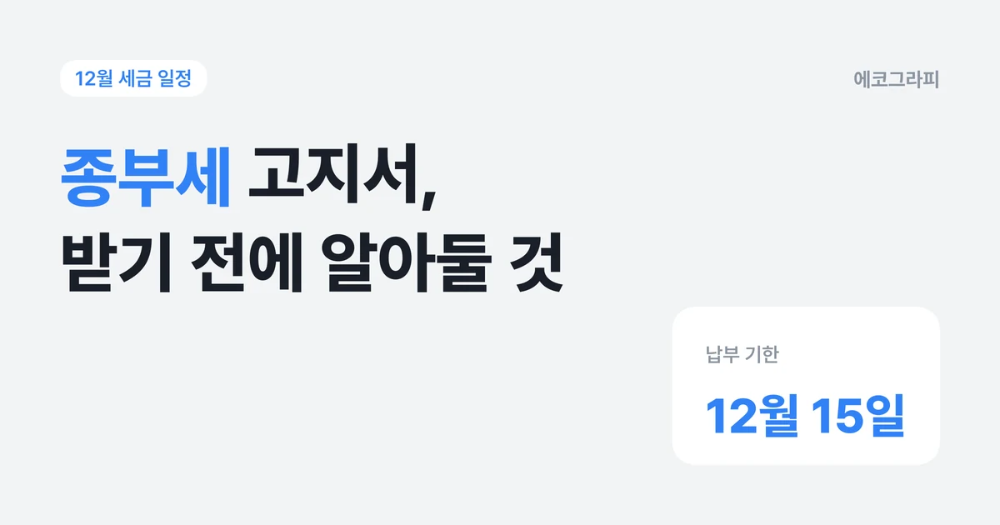
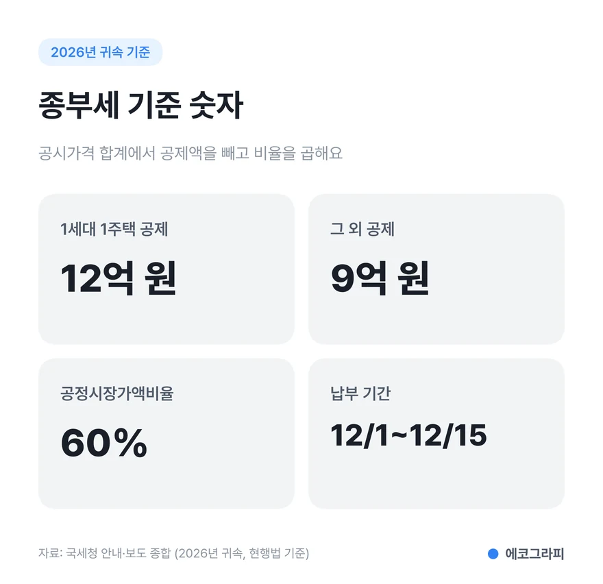
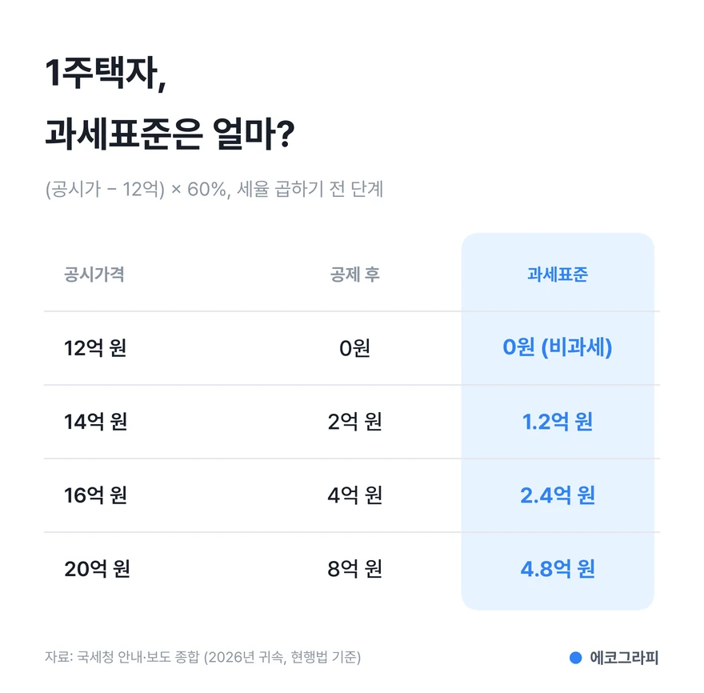
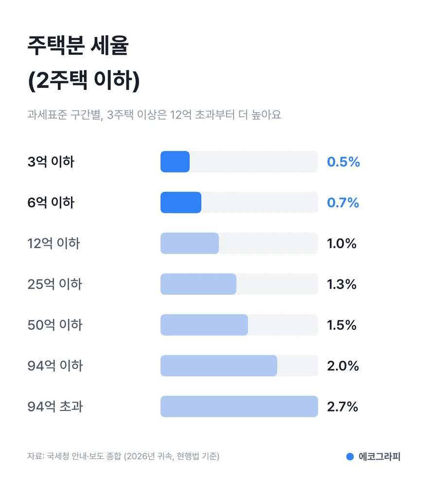
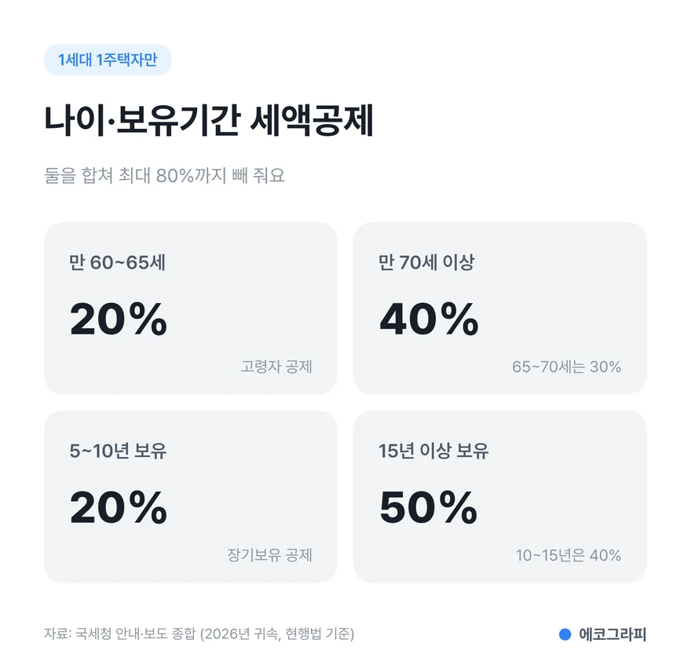

종합부동산세는 6월 1일 기준으로 가진 주택·토지의 공시가격 합계가 일정 금액을 넘는 사람이 내는 세금이에요. 주택은 1세대 1주택자면 12억 원, 그 외는 9억 원을 넘는 부분에만 붙어요.

올해는 공시가격 12억 원이 넘는 공동주택이 약 48만 7천 가구로, 1년 새 약 16만 9천 가구 늘었다는 분석이 있어요. 처음 고지서를 받는 1주택자가 늘어날 수 있다는 뜻이에요.
계산은 세 단계예요. ① 공시가격 합계에서 공제액을 빼고 ② 공정시장가액비율 60%를 곱해 과세표준을 구한 뒤 ③ 세율을 곱해요. 여기에 같은 집에 낸 재산세 중 겹치는 부분을 빼 주고, 농어촌특별세가 더해져요.


예를 들어 1주택자 집 공시가가 14억 원이면 과세표준은 1.2억 원이고, 가장 낮은 0.5% 구간에 들어가요. 실제 고지 금액은 재산세 공제와 세액공제에 따라 달라지니, 정확한 숫자는 고지서와 홈택스 모의계산으로 확인하세요.

1세대 1주택자는 나이(만 60세 이상)와 보유기간(5년 이상)에 따라 세액을 깎아 줘요. 둘을 합쳐 최대 80%까지예요. 15년 넘게 가진 만 70세 이상이라면 계산된 세금의 80%가 빠지는 셈이에요.
부부 공동명의 1주택: 원래는 각자 9억 원씩 공제받지만, 특례를 신청하면 1주택자처럼 12억 원 공제와 세액공제를 받을 수 있어요. 올해 신청 기간(9월 16~30일)은 지났으니, 내년에 어느 쪽이 유리한지 미리 비교해 두세요.
지금 해볼 것: 내 집 공시가격을 '부동산 공시가격 알리미'에서 확인해 보세요. 12억 원(1주택) 근처라면 고지서가 올 수 있어요.
올해(2026년 귀속)는 현행 기준 그대로 적용돼요. 다만 정부가 8월에 낸 세제개편안에는 2027년부터 거주 1주택 공제를 14억 원으로 올리고, 공정시장가액비율을 70%로 높이는 내용이 들어 있어요. 국회에서 비거주 1주택 공제액을 두고 논의가 이어지고 있어서, 12월 확정안을 확인해야 해요.
1세대 1주택자로 인정되면 12억 원 이하는 종부세가 없어요. 다만 일시적 2주택 등은 특례 신청 여부에 따라 달라져요.
고지서를 받은 뒤 납부 기한 안에 홈택스나 세무서에서 신청해요. 농어촌특별세 포함 300만 원을 넘어야 해요.
같은 부분에 대한 재산세는 종부세 계산 때 빼 줘요. 그래서 고지서에 '재산세 공제' 항목이 있어요.
정부안은 거주 1주택 공제는 늘리고 공정시장가액비율은 올리는 방향이라 사람마다 달라요. 12월 국회 확정안을 보고 다시 정리할게요.
※ 2026년 11월 기준으로 정리한 글입니다. 세율·제도는 바뀔 수 있으니 거래 전 증권사·국세청 안내를 한 번 더 확인하세요. 특정 종목·상품의 매수·매도 권유가 아닙니다.